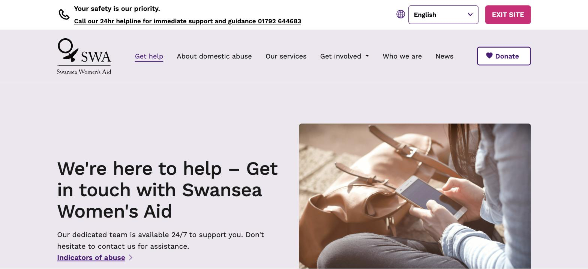

Case study·● Live site
Swansea Women's Aid: a research-led redesign
A full website redesign for a local domestic abuse charity, built around three different audiences with very different needs, and very different amounts of time to find what they're looking for.


The brief
Swansea Women's Aid needed a site that worked harder for three audiences at once: women seeking help, often in a moment of crisis; donors and funders; and people looking to volunteer. Staff also needed to be able to post news and updates themselves, without relying on a developer.
The research
I ran a stakeholder interview with the charity's team to understand their goals, then carried out user research (including interviews I commissioned through an external research partner) to understand real barriers. I also benchmarked the experience against Refuge's national site to see how a well-resourced organisation in the same space structured crisis messaging and support pathways.
The redesign
Navigation was rebuilt around the three priority audiences, with crisis support first. A visible "quick exit" safety feature was made prominent rather than buried, and a plain-language section on recognising abuse was added to reduce confusion. Staff login moved to the footer to keep the main site focused on visitors, sitting on top of a lightweight CMS so the team could publish news and events without developer help.
The outcome
The research and redesign fed directly into the charity's production site, live today at swanseawomensaid.com, structured around what someone actually needs in the moment they land on it: support first, then ways to give or get involved.
Key research findings that shaped the design
- Many women weren't sure whether what they were experiencing qualified as domestic abuse, or what services were available to them.
- The existing site's content was hard to navigate and lacked a clear structure for different visitors.
- Staff had no easy way to update news, services or events without developer support.
● Updated September 2026
Continued iteration: a full UX review and refresh
The original site had been rebuilt in a hurry after the charity lost content to an accidental deletion, so parts of it were never quite finished. I went back through the whole site: fixing what hadn't been properly rebuilt, tightening the design, reorganising key journeys in plain English, and working through a full WCAG 2.2 AA accessibility pass — while keeping the charity's existing branding and tone.

What changed in this round
- Safety features rebuilt to hold up under real use: a persistent, back-button-proof exit route and a Get help page leading with two clear actions.
- Navigation and services reorganised in plain English, replacing internal acronyms.
- A full WCAG 2.2 AA pass, plus a returning language menu for Welsh and community languages.
- Consistent design across desktop and mobile, with compressed images for faster loading.
- CMS and forms fixed, including a Get involved form that reaches the team.
Case study·● App submitted to App Store
Sober Points: designing a better way to find sober-friendly places
Product design · UX research · Interaction design · Prototyping · Usability testing · Product analytics
Sober Points is a discovery platform designed to help people find places where choosing not to drink doesn't mean compromising on the experience. I founded Sober Points after recognising a gap in traditional venue discovery: a restaurant, pub or bar might technically offer an alcohol-free option, but that doesn't necessarily make it a good experience for someone who isn't drinking. I led the product and UX design from early research and concept development through to the live web platform and native app.
The problem
Finding somewhere to eat or socialise is easy. Finding somewhere that's genuinely good when you're not drinking is harder: information about alcohol-free options is often incomplete, buried within menus, or unavailable until you arrive.
The initial question was how might we make it easier for people to discover places where they can have a genuinely good experience without alcohol? I deliberately didn't jump straight to a venue-finding app: early concepts explored a much broader ecosystem around sober living, including communities, podcasts, events and products, before research progressively narrowed the proposition.

Research narrowed a broad idea into one job
I used those early concepts to test which parts of the proposition people actually valued, rather than researching a predetermined solution. That process, alongside usability testing, repeatedly surfaced the same thing: people didn't want another community or content platform — they wanted a fast, trustworthy answer to "where can I go near me?" That finding is what cut Sober Points back from a broad sober-living ecosystem to a focused discovery tool.
I mapped the wider service — homepage, Sober Map, contribution journeys and supporting communications — rather than designing individual screens in isolation, so I could see how someone moves from discovering Sober Points to finding somewhere suitable, and how the community feeds information back into the platform.


Making venue discovery the core experience
Sober Points evolved into a focused proposition: help me find somewhere good to go when I'm not drinking. The map and venue experience progressively reveals information rather than making users investigate every venue individually — search by location, filter results, then open a venue profile with alcohol-free options, attributes and community reviews.
Designing a two-sided service, then iterating on real usage
Sober Points isn't just a consumer interface: it depends on the quality of the venue information behind it, so I designed contribution, moderation and venue-claiming journeys alongside the discovery experience. After launch, I used product analytics alongside qualitative research to prioritise what to fix next — this data is commercially sensitive, so I don't publish the underlying figures.
Real usage kept exposing problems the original interface hadn't anticipated. For example, venue type (a restaurant, pub or shop) and venue attribute (alcohol-free beer on draught) don't belong at the same level, and treating them as equivalent filters created a confusing hierarchy as the dataset grew. I separated venue type from more specific attributes and made the active state explicit within the results — a small change that shows how the IA has to evolve as the product gets more complex.
From web product to native app
As Sober Points developed, I translated the experience into a native mobile app — not a visual port of the website, but a rethink of map behaviour, navigation, authentication, saved venues and returning to the app through deep links.
Outcome
Sober Points progressed from exploratory wireframes into a live product with hundreds of sober-friendly venues and real users searching, discovering and interacting with venue information. Building my own product meant owning decisions about user needs, technical constraints, data quality, moderation and commercial viability, then seeing how those decisions performed through an ongoing loop of research, design, build, measure and iterate. The principle has stayed simple throughout: make it easier to find somewhere you'll genuinely enjoy going, whether you're drinking alcohol or not.